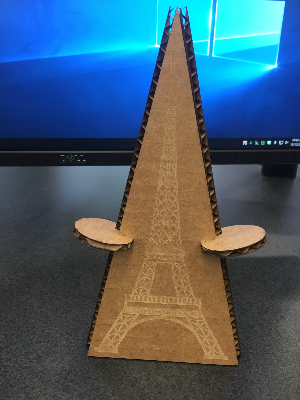

Press Fit Kit
A press fit kit is a group of 2d objects that when combined together in the right form end up making a 3d object.
I made the press fit kit using Fusion and basic tools for measurement.
My press-fit kit was ideally supposed to be more intricate but I ended up making a simplified version of it.
Specific elements of design were identified and then respectively ratered and cut using the laser cutter.
The peices could then be put together to form an elongated piramid whose faces were the eiffel tower.

The Water Bottle
The cylinders are seemlessly fascinating objects, and my next assignment
was engraving on a water bottle in the shape
of a cylinder.
This assignment opened a new area of the laser cutter by putting in the use of rollers.
The rollers and the rotation played a huge part in this project.
The rotation led to the engraving to be on the curved surface
rather than in a straight line.
The Bookmark
I chose to make a metal bookmark.The metal bookmark had the same design requirements
as that of any concocted project made in Corel X7.It just showed how the speed, frequency
and power had to be varied when using a different medium of print.